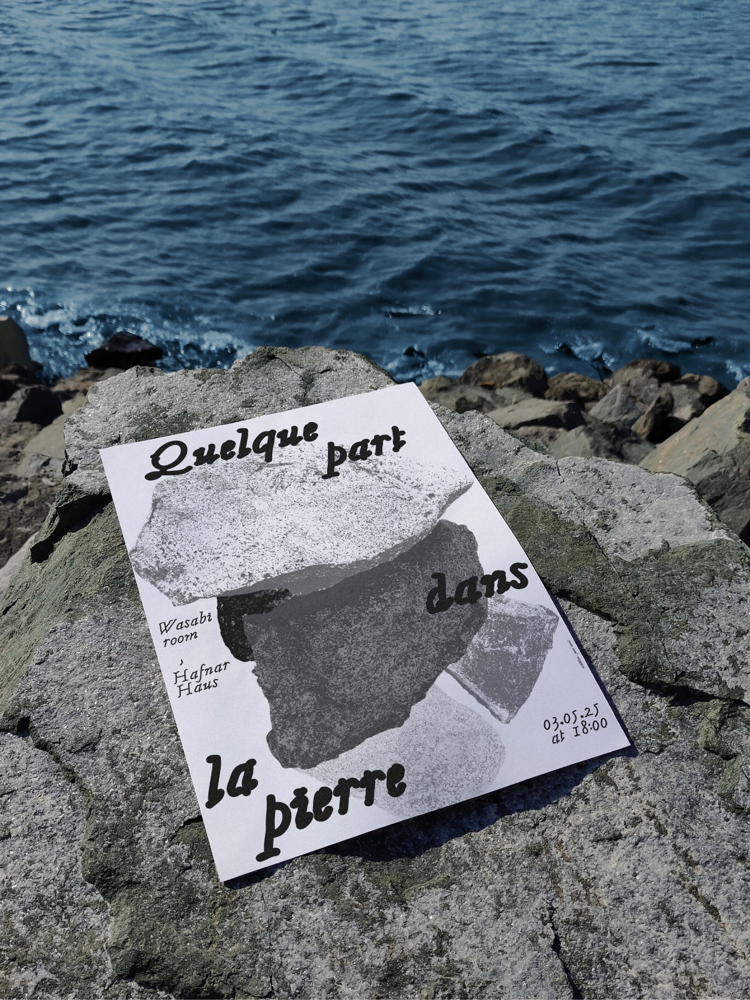
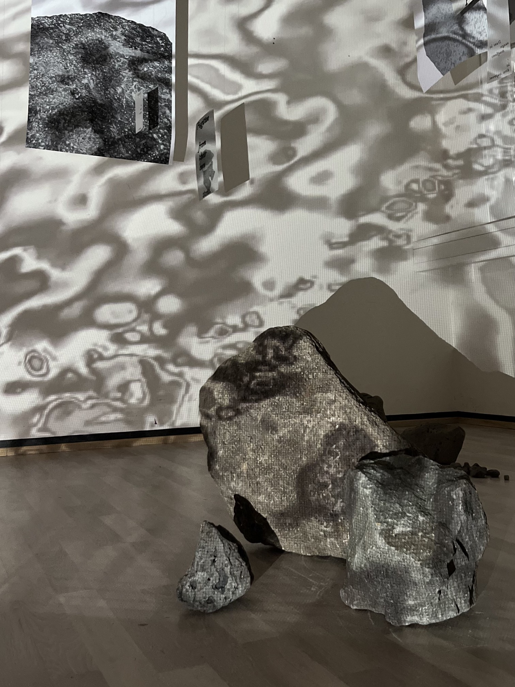

Exposition personnelle au sein de l'Hafnar·Haus (Islande), et identité visuelle de l'évènement. Le projet s'inspire du nom du studio « Huldufugl », issu d'un conte folklorique local, et de l'actualité. J'y propose une réinterprétation à travers une expérience immersive, visuelle et sonore, qui plonge le public au cœur de leurs habitats naturels. Une invitation à explorer ce que nous ne pouvons pas percevoir et laisser l'invisible s'exprimer.

